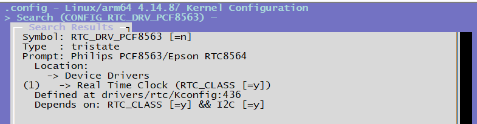

4.3.16. RTC 调试指南
4.3.16.1. 驱动代码
drivers/rtc/rtc-pcf8563.c
4.3.16.2. 内核配置
CONFIG_RTC_DRV_PCF8563

4.3.16.3. 驱动下载
备注：仅V0508和V0807版本需要额外下载驱动
从 X3M附加工具包 的 RTC-PCF8563 目录下，下载驱动文件。
加载预编译驱动，找到对应SDK版本的patch，把 rtc-pcf8563.ko 上传到设备上，然后执行以下命令加载驱动
insmod rtc-pcf8563.ko
4.3.16.4. RTC使用
驱动加载成功后，会出现 /dev/rtc1 设备节点，对应的就是pcf-8563，可以使用以下命令进行测试。
# 建立 /dev/rtc1 到 /dev/rtc 的软连接
ln -sf /dev/rtc1 /dev/rtc
# 测试命令
date -s 2022.01.21-21:24:00 # 设置系统时间
hwclock -w # 将系统时间写入RTC
hwclock -r # 读取RTC时间，确认时间是否写入成功
hwclock -s # 如果rtc电池存在，断电后，再上电，将RTC时间更新到系统时间
date # 读取系统时间
备注： 如果需要保证 RTC 断电后依然能够记录时间，需要给RTC提供单独的供电，供电接口为 RTC Battery Con 。